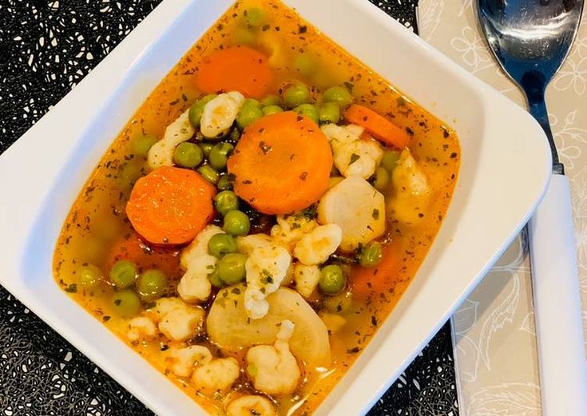

Fontos helyet foglal el a magyar konyha ételei között. Jó télen és nyáron, elkészíthető különféle húsokból. Főzése nem bonyolult, de nem is olyan egyszerű, mint amilyennek látszik.
A borsóleves egy nagyon egyszerű étel, mégis sokaknak a kedvence, éppen ezért mindenki kicsit másképp készíti. Én a borsólevest vajgaluskával szeretem, de természetesen lehet tésztával vagy grízgaluskával is, ha valakinek úgy az igazi. Készülhet fagyasztott borsóból is, úgy is isteni lesz, de a legjobb friss és zsenge cukorborsóból.
A tojásleves gyakorlatilag egy turbózott rántott leves, az íze mindenkinek ismerős, ki ecetesebben, ki sósabban szereti.

A paradicsomleves az egyik legkönnyebben elkészíthető, mégis talán legfinomabb leves. A paradicsomleves betűtésztával tálalva pedig igazi klasszikus, és nem csak a menzán, de otthon is megállja a helyét.

A nyári hőségben nem is kívánhatnánk jobbat egy hűsítő, hideg gyümölcskrémlevesnél.